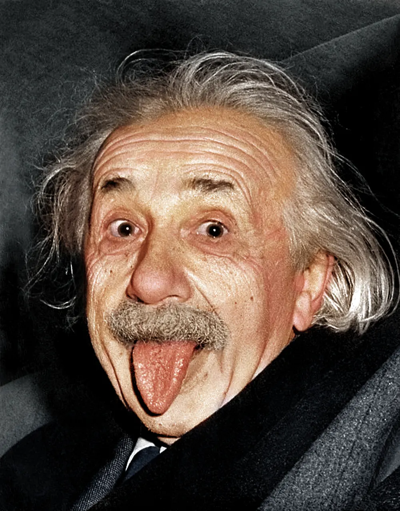
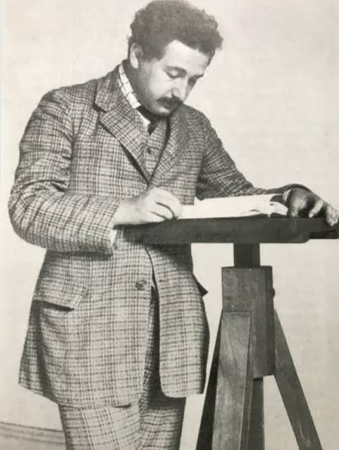
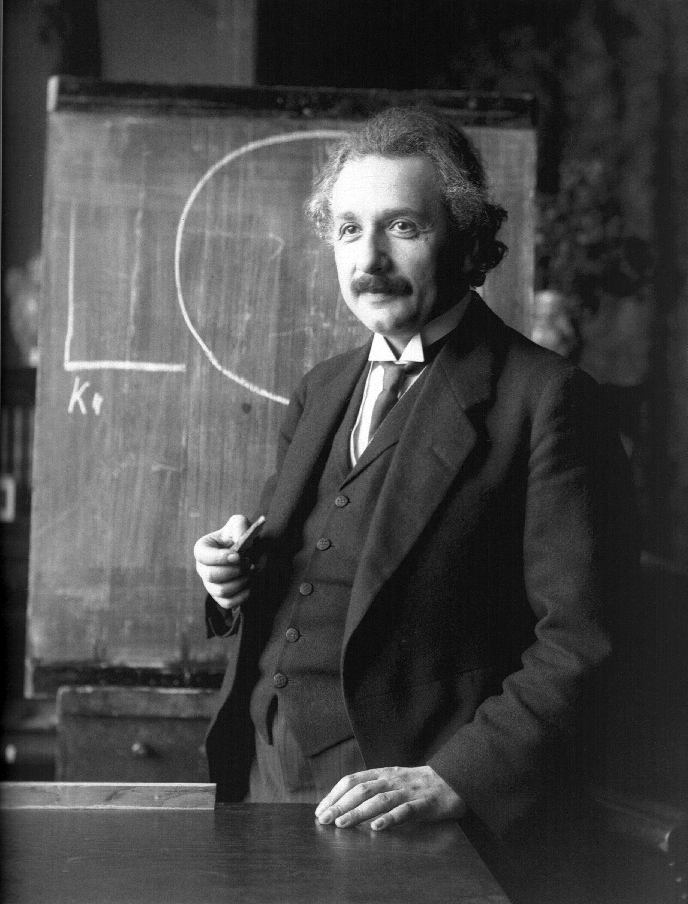
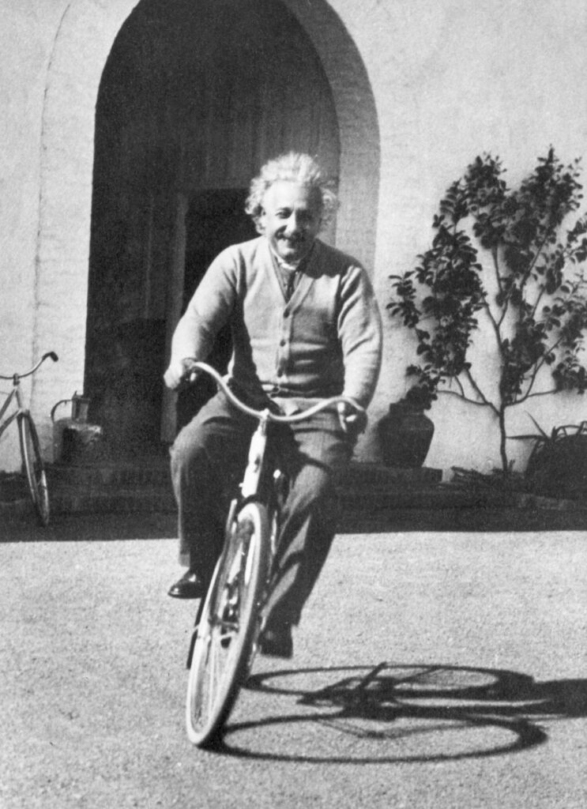
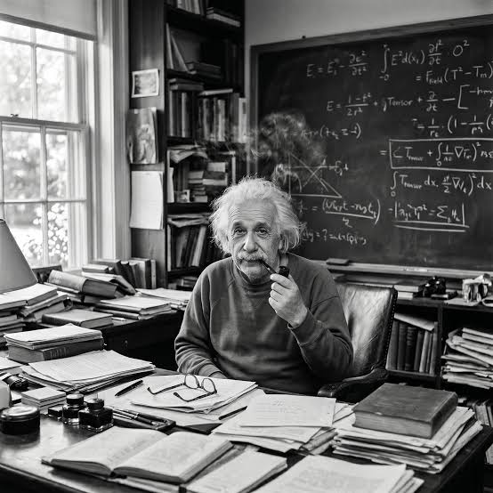
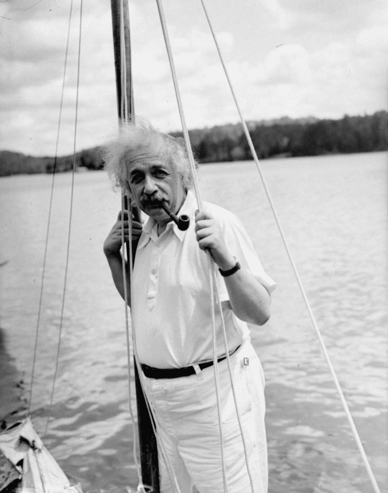
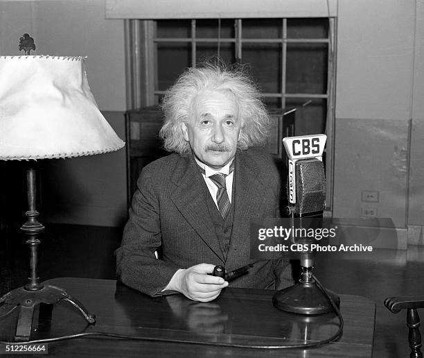

About
I spent my life asking what the universe looks like from the inside of a beam of light, and writing down the answers I thought that were correct. I did not know my answers would become world famous for years to come.
In 1905, while working as a patent examiner in Bern, I published four papers that reconsidered light, matter, space and time. Ten years later I set down the field equations of general relativity. In 1921 I received the Nobel Prize in Physics for the discovery of the law of the photoelectric effect.
From 1933 until the end of my life I worked at the Institute for Advanced Study in Princeton, New Jersey.
Read my Wikipedia article
Published Papers
On the Motion of Small Particles Suspended in a Stationary Liquid
Read paperOn the Electrodynamics of Moving Bodies
Read paperDoes the Inertia of a Body Depend Upon Its Energy Content?
Read paperThe Field Equations of Gravitation
Read paperCosmological Considerations in the General Theory of Relativity
Read paperHobbies
The violin
I began at six, and by thirteen Mozart had taught me more than any lesson did. I have kept a violin near me ever since and call her Lina. Most days end with chamber music, that I play for whoever is with me. I have said before that I think in music, and that if I were not a physicist I would probably be a musician.
Sailing
I keep a small boat and take it out whenever there is water and a little wind. I am a poor sailor and a poor swimmer, however I love to be on the water for the relaxing sensation. Relaxing is very important to me and it is how I do most of my thinking.
Walking
Every day I walk from Mercer Street to the Institute and back again, in whatever weather Princeton decides to offer. It is a little over a mile each way and I am rarely in a hurry. Most of what I have worked out, I worked out somewhere along that road rather than at a blackboard.
Photographs






Blog
Albert Einstein Blog
The one stop place to find everything about Albert Einstein. You can read about all about my publications and why I choose to write about them. I also go more in depth about my upbringing and why I choose to do the things I did. Please give it a look and let me know what you think.
Visit Blog